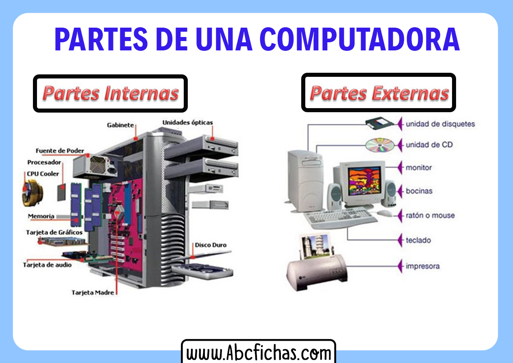
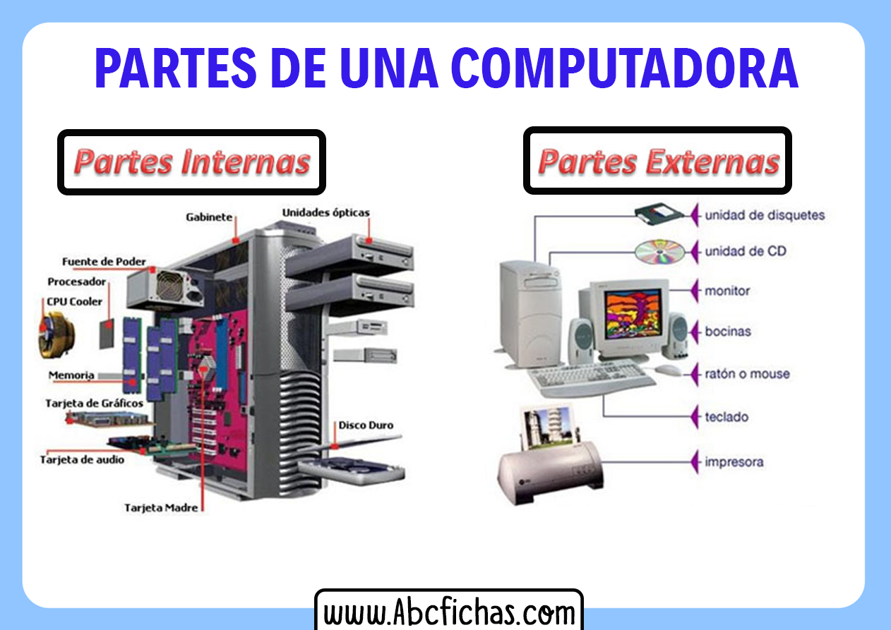
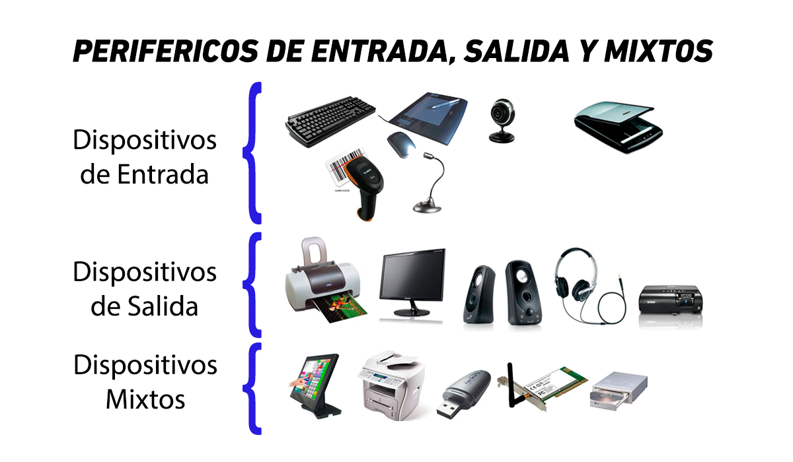

Elementos en la arquitectura
Existen dos tipos de elementos que conforman una computadora: los elementos externos (también llamados periféricos) y los elementos internos (llamados también componentes internos).

Existen dos tipos de elementos que conforman una computadora: los elementos externos (también llamados periféricos) y los elementos internos (llamados también componentes internos).

Son dispositivos que nos permitan interactuar con la computadora. También se llaman componentes de entrada / salida, porque mediante ellos podemos ingresar información en la computadora u obtener información de ella. Los periféricos básicos, que fueron inventados
prácticamente con la computadora, son:
● De entrada: el teclado y el ratón (o mouse).
● De salida: la pantalla.
Con el tiempo fueron apareciendo dispositivos más sofisticados, como parlantes, cámaras, joysticks, etcétera.
Dentro de la categoría de periféricos están también los dispositivos externos de almacenamiento de memoria
(pendrives, discos compactos, tarjetas SD, etcétera) y los que podemos llamar «periféricos de oficina»: impresoras, proyectores, etc.

Hallar las palabras ocultas.
● CPU: la central processing unit, o simplemente «procesador». Es el más importante de todos los componentes. Determina qué tan rápido puede realizar procesos de cálculo el computador.
Existen varios tipos y de muchas generaciones: i3, i5, i7, ryzen 7. Estos son modelos de procesador y cada uno tiene generaciones; a mayor generación, mejor desempeño.

● Tarjeta gráfica: como su nombre lo indica, es la que procesa los gráficos, que en los últimos tiempos se han vuelto cada vez más realistas y de alta definición. Muchos procesadores tienen ya integrada una unidad de procesamiento de gráficos; sin embargo, para tareas más especializadas (como diseño gráfico o edición de películas), se necesitará probablemente una tarjeta gráfica externa.

● Placa madre o mainboard: es la que orquesta el trabajo coordinado entre todos los elementos internos del computador. Las tarjetas madre llevan una batería; cuando esta se gasta tenemos que cambiarla y revisar el sistema de la BIOS. La BIOS es el sistema operativo que guarda la tarjeta madre y que sirve para arrancar el sistema operativo del computador.

● Disco duro: mantiene la información más relevante e imprescindible para el funcionamiento del computador. Una alternativa es el disco de estado sólido, que es mucho más rápido, pero también más costoso.

● Memoria RAM. Se encarga de ayudar a los procesadores a mantener datos que no van a ser guardados en la computadora, se insertan en ranuras directamente conectadas a la tarjeta madre.

● Fuente de poder. Provee la energía eléctrica que consumirán los otros componentes.Los componentes internos suelen ir ensamblados en una «caja» (o case) que provee, además, ventilación al sistema, para evitar que se recaliente. En el case están los puertos que permiten conectar los periféricos… ¡Y así tenemos un aparato elegante y funcional!

Relacione los elementos internos y externos del computador.
Relacione los elementos internos y externos del computador.
","showMinimize":false,"itinerary":{"showClue":false,"clueGame":"","percentageClue":40,"showCodeAccess":false,"codeAccess":"","messageCodeAccess":""},"cardsGame":[{"url":"","x":0,"y":0,"author":"","alt":"","audio":"","color":"#000000","backcolor":"#ffffff","eText":"Interno","urlBk":"resources/Intel.webp","xBk":0,"yBk":0,"authorBk":"","altBk":"","audioBk":"","colorBk":"#000000","backcolorBk":"#ffffff","eTextBk":"Procesador"},{"url":"resources/mause.jpg","x":0,"y":0,"author":"","alt":"","audio":"","color":"#000000","backcolor":"#ffffff","eText":"Mouse","urlBk":"","xBk":0,"yBk":0,"authorBk":"","altBk":"","audioBk":"","colorBk":"#000000","backcolorBk":"#ffffff","eTextBk":"Externo"},{"url":"resources/memoriaram.jpg","x":0,"y":0,"author":"","alt":"","audio":"","color":"#000000","backcolor":"#ffffff","eText":"Memoria%20Ram","urlBk":"","xBk":0,"yBk":0,"authorBk":"","altBk":"","audioBk":"","colorBk":"#000000","backcolorBk":"#ffffff","eTextBk":"Interno"},{"url":"","x":0,"y":0,"author":"","alt":"","audio":"","color":"#000000","backcolor":"#ffffff","eText":"Externo","urlBk":"resources/altavoz.jpg","xBk":0,"yBk":0,"authorBk":"","altBk":"","audioBk":"","colorBk":"#000000","backcolorBk":"#ffffff","eTextBk":"Altavoz"}],"isScorm":0,"textButtonScorm":"Guardar la puntuación","repeatActivity":false,"textAfter":"%3Cp%20data-start%3D%22325%22%20data-end%3D%22601%22%20class%3D%22%22%3EEste%20juego%20te%20ayudar%E1%20a%20reconocer%20mejor%20qu%E9%20partes%20de%20una%20computadora%20van%20por%20dentro%20y%20cu%E1les%20usamos%20por%20fuera%20para%20interactuar%20con%20ella.%20Observa%20bien%20las%20im%E1genes%20y%20piensa%20en%20d%F3nde%20se%20encuentra%20cada%20componente.%20%A1Aprender%20jugando%20es%20m%E1s%20divertido%21%3C/p%3E","version":1.3,"percentajeCards":100,"type":2,"showSolution":true,"timeShowSolution":3,"time":3,"evaluation":false,"evaluationID":"","id":"202556161555300","msgs":{"msgSubmit":"Enviar","msgClue":"¡Genial! La pista es:","msgCodeAccess":"Código de acceso","msgPlayStart":"Pulse aquí para jugar","msgScore":"Puntuación","msgErrors":"Errores","msgHits":"Aciertos","msgMinimize":"Minimizar","msgMaximize":"Maximizar","msgFullScreen":"Pantalla Completa","msgExitFullScreen":"Salir del modo pantalla completa","msgNoImage":"Pregunta sin imágenes","msgEndGameScore":"Antes de guardar la puntuación comience la partida.","msgScoreScorm":"La puntuación no se puede guardar porque esta página no forma parte de un paquete SCORM.","msgOnlySaveScore":"¡Sólo puede guardar la puntuación una vez!","msgOnlySave":"Sólo puede guardar una vez","msgInformation":"Información","msgYouScore":"Su puntuación","msgAuthor":"Autoría","msgOnlySaveAuto":"Su puntuación se guardará después de cada pregunta. Sólo puede jugar una vez.","msgSaveAuto":"Su puntuación se guardará automáticamente después de cada pregunta.","msgSeveralScore":"Puede guardar la puntuación tantas veces como quiera","msgYouLastScore":"La última puntuación guardada es","msgActityComply":"Ya ha realizado esta actividad.","msgPlaySeveralTimes":"Puede realizar esta actividad cuantas veces quiera","msgClose":"Cerrar","msgAudio":"Audio","msgNumQuestions":"Número de tarjetas","msgTryAgain":"Necesita al menos un %s% de respuestas correctas para conseguir la información. Vuelva a intentarlo.","msgEndGameM":"Has completado el juego. Tu puntuación es %s.","msgUncompletedActivity":"Actividad no completada","msgSuccessfulActivity":"Actividad superada. Puntuación: %s","msgUnsuccessfulActivity":"Actividad no superada. Puntuación: %s","msgTypeGame":"Relaciona","msgCheck":"Comprobar","msgRestart":"Reiniciar"}}Este juego te ayudará a reconocer mejor qué partes de una computadora van por dentro y cuáles usamos por fuera para interactuar con ella. Observa bien las imágenes y piensa en dónde se encuentra cada componente. ¡Aprender jugando es más divertido!
Obra publicada con Licencia Creative Commons Reconocimiento Compartir igual 4.0
{kind=link}
{kind=link}
{kind=link}
{kind=link}